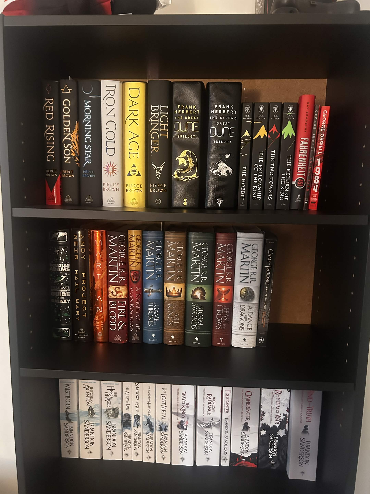

My Journey as a Reader
I went from being a non-reader to developing a passion for Science Fiction and fantasy. Reading introduced me to new worlds, interesting characters, and imaginative ideas. Eventually, that passion inspired me to pursue writing stories of my own.

Science Fiction
Science fiction explores advanced technology, space travel, politics, and humanity's future. Some of my favorite books in this genre include:
- Red Rising - Pierce Brown
- Dune - Frank Herbert
- Project Hail Mary - Andy Weir
- Skyward - Brandon Sanderson
Fantasy
Fantasy explores magical worlds, complex characters, political intrigue, and extraordinary adventures. Some of my favorite fantasy book series include:
- Mistborn - Brandon Sanderson
- A Song of Ice and Fire - George R. R. Martin
- The Stormlight Archive - Brandon Sanderson
- The Lord of the Rings - J.R.R. Tolkien
My Writing
My love of reading has inspired me to create stories of my own. I am working on developing my skills as a writer and building original worlds, characters and stories. My goal is to become a published author.